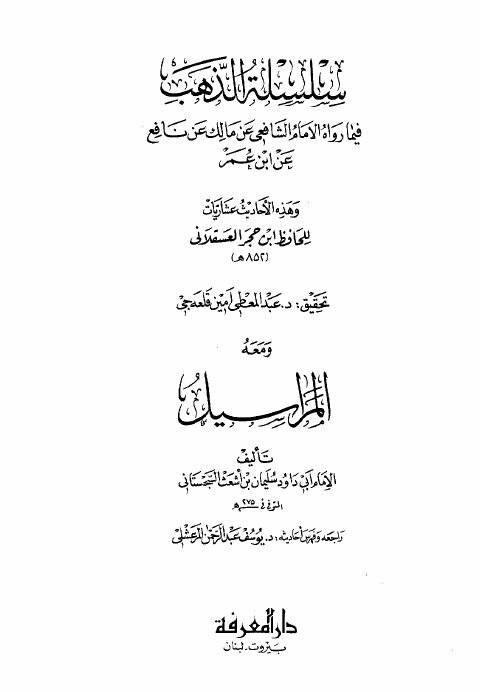

Downloads need an internet connection.
سلسلة الذهب فيما رواه الإمام الشافعي عن مالك عن نافع عن ابن عمر ومعه المراسيل
Authors: أحمد بن علي بن حجر العسقلاني سليمان بن أشعث السجستاني أبو داود
Editors: يوسف عبد الرحمن المرعشلي عبد المعطي أمين قلعه جي
Publishers: دار المعرفة
**▫️ العنوان: سلسلة الذهب فيما رواه الإمام الشافعي عن مالك عن نافع عن ابن عمر ومعه المراسيل** ▪️ المؤلف: #أحمد_بن_علي_بن_حجر_العسقلاني • #سليمان_بن_أشعث_السجستاني_أبو_داود ▫️ المحقق: #عبد_المعطي_أمين_قلعه_جي • #يوسف_عبد_الرحمن_المرعشلي ▪️ الناشر: #دار_المعرفة ▫️ بلد النشر: بيروت، #لبنان ▪️ الطبعة: 1 ▫️ عدد الأجزاء: 1 ▪️ الصفحات: 238 ▫️ نوع الوعاء: #كتاب ▪️ التصنيف الرئيسي: #الحديث_وعلومه ▫️ التصنيف الفرعي: #تخريج ۪